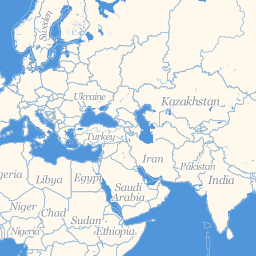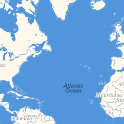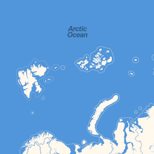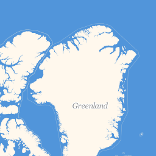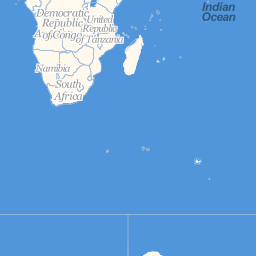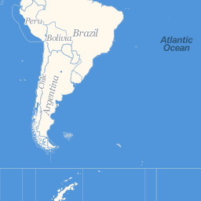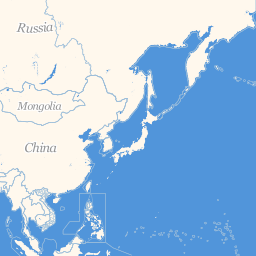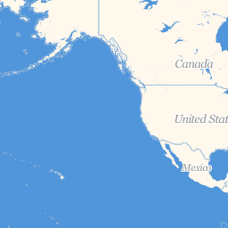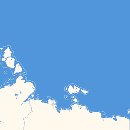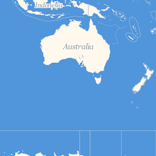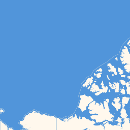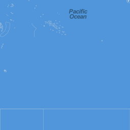
Data © 2009 OpenStreetMap. Rendering © 2009 CloudMade.
2000 km
1000 mi

Scale = 1 : 111M
| Title | Location | Date |
|---|---|---|
| Unofficial snow avalanche condition from... | Chamonix, France | Jan 31 2013 |
| Piccola valanga a lastroni | Via Fontanelle, 55030 Metello Province of Lucca, Italy | Jan 30 2013 |
| Natural slide on Monitor Peak | Monitor Peak, Toiyabe National Forest, Nevada 89045, USA | Jan 30 2013 |
| Two climbers killed by avalanche near the... | Grand Armet, 38350 Chantelouve, France | Jan 30 2013 |
| Mountaineering skier dies in Fribourg Alps | Teysachaux, 1623 Châtel-Saint-Denis, Switzerland | Jan 29 2013 |
| L’avalanche s’arrête près d’une piste | Saint-François-Longchamp, France | Jan 28 2013 |
| Avalanche swept skiers against trees near... | Clause Peak, Teton National Forest, Wyoming 83001, USA | Jan 27 2013 |
| Avalanche swept skier against trees at Grand... | Survey Peak, Targhee National Forest, Wyoming 83414, USA | Jan 27 2013 |
| Aulon coupé du monde après deux avalanches | Aulon, France | Jan 26 2013 |
| Travolti cinque scialpinisti sul Monte Rotondo:... | Monte Rotondo, Parco Nazionale dei Monti Sibillini, 62039 Pieve Province of Macerata, Italy | Jan 26 2013 |
| Title | Source | Date |
|---|---|---|
| Winter X Games Aspen (USA): a Shaun White... | snowpassion | Jan 31 2013 |
| Musica e sci, 4 concerti sulla neve con... | montagna.tv | Jan 31 2013 |
| Trentino, chiesto allontanamento forzato... | montagna.tv | Jan 31 2013 |
| Scialpinistica Pizzo Tre Signori: nella... | snowpassion | Jan 31 2013 |
| Exposed to dreams. Simone Moro: questo film... | montagna.tv | Jan 31 2013 |
| Il Cai e gli ambientalisti lanciano un Diario... | montagna.tv | Jan 31 2013 |
| Lonnie Dupre rinuncia al McKinley in invernale | montagna.tv | Jan 31 2013 |
| Highlights Winter X Games Aspen (USA) | snowpassion | Jan 30 2013 |
| Sciando con le Stelle, a Prato Nevoso la... | snowpassion | Jan 30 2013 |
| Valtellina, domenica 3 febbraio la “Gusta... | montagna.tv | Jan 30 2013 |